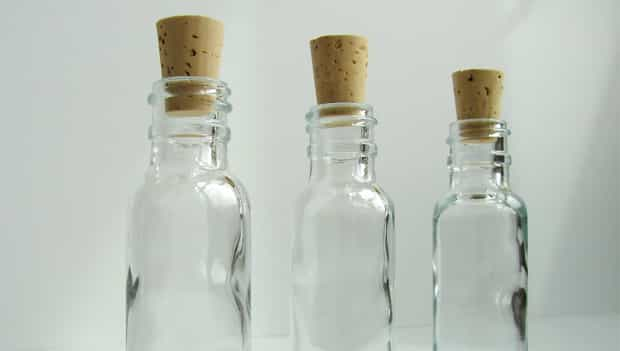

< < < Back
Chicktini: The Liquid Panty-Dropper – Return Of Kings
One thing on every man’s mind as summer approaches is getting a woman back to his place for a bang drink. Women aren’t stupid and they know perfectly well what you’re up to, so the key is to come up with something so unbelievably retarded that it allows her to blame her indiscretions on you. You must give her the excuse she needs to fuel the “one thing just led to another” hamsterbation process. Like Indiana Jones, you must successfully navigate a series of challenges if you hope to reveal the secret revolving door that leads to her Temple of Poon.
Your job is to create that “one thing” that “led to another,” and that one thing can be the Chicktini.
Say you’re a chick and I approach you at the pool (my favorite place to meet girls). I will have already fired up the grill and offered you one of my world-famous organic vegetarian fire-grilled cheese quesadillas as an opener. They taste great for a number of reasons, not the least of which is because they’re neither organic nor vegetarian.
Somewhere during the inevitable conversation about my delicious quesadillas, I’ll mention that I just perfected the Chicktini. I’ll tell you I’d offer you one if they weren’t so hard to make. You’ll be curious and ask me about the ingredients, and I’ll tell you the recipe is a secret blend of vodkas and fresh juices.
You’ll say it sounds “amazing” or “unbelievable” or something equally predictable and trite.
I’ll say I only make them on special occasions or for close friends.
You’ll insist that you’re a friend and that today is a special occasion.
I’ll say that you’re not a real friend until I see your boobs.
You’ll pretend to be offended.
I’ll pretend not to notice.
Inevitably, regardless of whether it’s that night or a week or two later, you’ll bring up the Chicktini and I’ll invite you over to my place. We can only have them at my place because I need my juicer and my kitchen. Again, the Chicktini is a very involved drink and preparing one is a complicated process.
You’ll show up 80% of the time, because flaking on someone who lives in the building isn’t cool.
You’ll watch as I open the freezer and take out a bottle of Grey Goose vodka and two cool-looking bottles I bought from the store which have been filled with mysterious homemade liquids. I’ll grab a large Asian pear out of the fridge, and slice it up for juicing.
I’ll explain the resource and time-intensive process it takes to create just one Chicktini as I begin to prepare it for you.
I’ll juice half of the pear, and set the juice aside. If you’re an absolute retard and have never seen an Asian pear (common) I’ll tell you how rare they are and how I have to comb the city to find them.
I’ll pour 2.5 oz. of fresh pear juice into the tumbler on ice.
I’ll pour in 1.5 oz. of Grey Goose vodka.
I’ll open the first mysterious bottle and have you take a whiff. You’ll love the smell. I’ll tell you how I have to soak the vodka in a perfect blend of natural vanilla and cinnamon sticks and then strain it through angel food cake in order for it to be sweet and crisp.
You’ll be impressed as I pour 3/4 oz. of Thatch’s special-blend vodka into the tumbler.
Next comes the other bottle filled with red liquid. While I’m carefully measuring out 1/3 oz. of the fresh pomegranate juice, I’ll tell you how it takes for-freaking-ever to harvest fresh pomegranate seeds, boil them down, and turn them in to fresh pomegranate juice.
I’ll shake the concoction on ice, pour it into a martini glass, and garnish it with a little sliver of the Asian pear.
OMG you will like, not be able to, like, believe how super amazing it tastes! Kittens and rainbows! You’ll definitely snap a picture and put it on Instagram, Pinterest or Facebook along with the recipe.
– 2.5 oz. fresh Asian pear juice
– 1.5 oz. Grey Goose vodka
– 3/4 oz. Thatch’s super-secret amazing special blend vodka
– 1/3 oz. fresh pomegranate juice
One of three things will happen. There’s a 25% chance I’ll get the bang that night, 50% chance I’ll get the bang within two weeks (75% combined bang rate), and 25% chance I won’t get the bang but you’ll tell every girl in our building how epic the special Chicktini tastes, and what a super-awesome guy I am.
Oh, but I forgot to tell you about the secret ingredient!
The secret ingredient is lies.
There’s no way in hell I’m going through all that work to make a cocktail for a girl. So let’s go over the real recipe.
– 2.5 oz fresh Asian pear juice
– 1.5 oz Grey Goose vodka
– 3/4 oz UV brand whipped cream flavored vodka
– 1/3 oz POM brand pomegranate juice
The key here is to let her see you juice the pear. I hear it’s sexy to watch a man in the kitchen (as long as he doesn’t look like he belongs there), and that makes it plausible in her mind that the other ingredients are fresh too.
Go to the kitchen section of Target or Wal-Mart and buy glass artisan bottles with corks for around $6 each (I got mine from Etsy because sometimes I fag out like that), and pour the POM and UV flavored vodka into them so it looks homemade.

How does the Chicktini really taste?
Like any other over-priced bullshit chick drink you’d buy her at a douchebag bar. There’s absolutely nothing special about it at all. In fact, it’s a tad sweet, and though the POM cuts the sweetness a little, it really does nothing more than turn the drink pink.
Pro tip 1: Taste is regional, so if it’s too sweet for the girls in your neck of the woods, split the pear juice into equal parts pear juice and cheap, dry sparkling wine. The 89 Le Colture NV Fagher Brut is a good choice, and you can pick up a bottle for under $20.
The important thing is that the Chicktini is pink and tastes like candy, so it goes down easy and rapidly. The whole game here is to get her back to your place so she can watch you juice and enjoy a “special” drink that you normally wouldn’t make for anyone else because of the time-intensive recipe.
Pro tip 2: The Chicktini line falls flat in bars (for me, anyway). It works well in day game, but the greatest success is always poolside – most likely because chicks have their bitch shields lowered with a guy who is their neighbor.
Pro tip 3: The Chicktini is a vehicle, not a tool. She knows with 99.9% certainty if she’s going to bang you or not before she even knocks on your door, and the remaining 0.1% is reserved for whether or not you say something stupid to change her mind. The Chicktini carries her to her pre-determined destination; it does not create a bang out of thin air for a gameless schmuck.
Though this particular Chicktini recipe is new for the 2013 summer season, I’ve been pulling this off for the past four summers and it works like a charm. So far, the new Chicktini recipe has been met with great reviews even though I think it tastes woefully predictable and a tad too sweet. I’ve only tested this particular recipe on three girls, but it seems that adding the juicing angle has really increased interest.
If it turns out they actually do serve beer in hell, the Chicktini would be a great addition to the drink menu. Cheers!
Read Next: Juicing: Flash In The Pan Or Growing Lifestyle Movement?


{kind=link}
{kind=link}
{kind=link}
{kind=link}